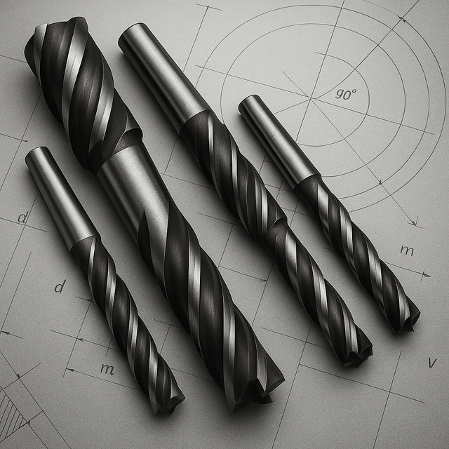

Фрези кінцевіФрезы концевые
Фреза ц/х т/с з напаяною пластиною ф 18.0 z=3 сплав Р30 гвинтова пластина 90х20 Forcon ( Угорщина)Фреза ц/х т/с с напайной пластиной ф 18.0 z=3 сплав Р30 винтовая пластина 90х20 Forcon ( Венгрия)
ОписОписание
Фреза ц/х т/с з напаяною пластиною ф 18.0 z=3 сплав Р30 гвинтова пластина 90х20 Forcon ( Угорщина) — професійний металорізальний інструмент для фрезерування пазів, уступів, контурів і кишень. Основні параметри: діаметр Ø 18.0 мм, розмір 90×20 мм, кількість зубів z3 та циліндричний хвостовик. Виробник: Угорщина. Інструмент перевірений і готовий до відвантаження. В наявності 2 шт. на складі у Харкові. Ціна 1200 грн без ПДВ. Опт і роздріб, відправлення по всій Україні. Замовлення від 2 000 грн.Фреза ц/х т/с с напайной пластиной ф 18.0 z=3 сплав Р30 винтовая пластина 90х20 Forcon ( Венгрия) — профессиональный металлорежущий инструмент для фрезерования пазов, уступов, контуров и карманов. Основные параметры: диаметр Ø 18.0 мм, размер 90×20 мм, число зубьев z3 и цилиндрический хвостовик. Производитель: Венгрия. Инструмент проверен и готов к отгрузке. В наличии 2 шт. на складе в Харькове. Цена 1200 грн без НДС. Опт и розница, отправка по всей Украине. Заказ от 2 000 грн.
ХарактеристикиХарактеристики
| Тип інструментуТип инструмента | Фреза кінцеваФреза концевая |
|---|---|
| КатегоріяКатегория | Фрези кінцевіФрезы концевые |
| Діаметр ØДиаметр Ø | 18.0 мм18.0 мм |
| РозміриРазмеры | 90×20 мм90×20 мм |
| Кількість зубів zКоличество зубьев z | 33 |
| ХвостовикХвостовик | циліндричнийцилиндрический |
| КраїнаСтрана | УгорщинаВенгрия |
| СтанСостояние | новийновый |
| Код товаруКод товара | FLK-06839FLK-06839 |
| НаявністьНаличие | 2 шт.2 шт. |